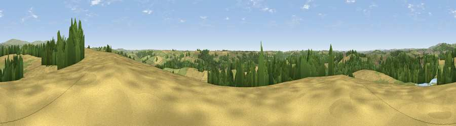

Viewpoint near Yealmpton
#17565 in England · top 38% of its area beats it · near Yealmpton · path 134 mWhere it is
The exact computed spot (SX 57975 53025). Click the marker for map links.
Public access: the nearest public right of way is about 134 m away — the final stretch may cross private land. Computed from Natural England's CRoW access layer and OpenStreetMap rights of way — not the legal definitive map. Always verify locally.
The view, rendered

A 360° render of this exact spot computed from the terrain model, tree cover and land cover — summer colours, afternoon light, calibrated against photographs of famous viewpoints. Real trees, hedges and buildings will differ in detail.
The panorama
Grey silhouette: terrain skyline in each direction (720 bearings, Earth curvature and refraction included). Dashed green: skyline with trees (+15 m) and buildings (+8 m) as obstacles. Blue strip: how far the ground is visible on each bearing.
Where the view opens
Wedge length = distance to the farthest visible ground on that bearing (vegetation-aware). Rings at 10, 25 and 50 km.
What fills the view
41% grassland · 32% cropland · 25% woodland · 2% built-up · 1% water
Angular shares of the visible panorama (visual magnitude), not map area. Landscape diversity 0.52 (0–1 Shannon).
Key numbers
More beautiful places nearby
The staircase of upgrades: each row has a higher view potential than everything closer. Driving times are estimates from straight-line distance, calibrated against real road routing — check an actual route before setting out.
| Place | Direction | Drive | Score |
|---|---|---|---|
| Viewpoint near Ermington | E · 4 km | ~9 min | 66.4 |
| Viewpoint near Sparkwell | NNW · 5 km | ~12 min | 77.6 |
| Viewpoint near Newton Ferrers | S · 6 km | ~13 min | 79.5 |
| Western Beacon | ENE · 9 km | ~17 min | 81.9 |
| Viewpoint near Lee Moor | NNW · 10 km | ~19 min | 82.7 |
| Viewpoint near Hope | SE · 17 km | ~30 min | 84.4 |
| Viewpoint near East Prawle | SE · 25 km | ~41 min | 84.6 |
| Pencarrow Head | W · 43 km | ~63 min | 86.0 |
50.35995, -3.99805 · source: screening · position refined by local search. Computed location — check access rights before visiting.